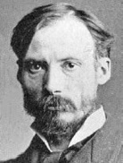

İzlenimci akımın en önemli ressamlarından biri olan Auguste Renoir (1841-1919), dinlenme sahneleri ve kadınlarla çocukların duyusal portreleri ile ünlüdür.
Bir terzinin oğlu olan Renoir, on üç yaşında porselen üzerine çiçek resimleri ve yelpaze dekorasyonu yaptığı bir işe girdiği zaman sanatsal kariyerine başladı. Louvre Müzesi’nde kopyalar yaparak becerilerini ilerletti ve sonra 1861’de Güzel Sanatlar Okulu’na kaydoldu. Bir yıl sonra Renoir, gelecekteki izlenimcilerden Claude Monet, Alfred Sisley ve Frederic Bazille ile tanıştığı İsviçreli akademik ressam Charles Gleyre’nin stüdyosuna girdi. Renoir’ın 1860’larda resmî Salon’a çeşitli eserleri ile katkıda bulunmasına rağmen, 1874’teki ilk isyankâr sergilerinde izlenimcilere katıldı.

Sonraki on yılda, izlenimciliğin ilkeleri Renoir’ın tarzı üzerinde derin bir etki bıraktı. Le Moulin de la Galette (1876) eserinde kompozisyon, resim dışındaki dünyanın bir devamı olacak şekilde gösterilerek keyfî biçimde kesilir.
Renoir, Le Moulin de la Galette eserini 1877’deki üçüncü izlenimci sergiye sundu. 1878 yılıyla beraber, sosyetik ve varlıklı bireylerin hamiliğinin gelişmeye başladığı resmî Salon’a geri dönmüştü. Mali kısıtlamalardan kurtulan Renoir, yoğun bir şekilde gezmeye başlayarak 1881’de Kuzey Afrika’ya ve 1882’de itibaren uzun bir dönemliğine İtalya’ya gitti. İtalya’da Renoir, izlenimciliğin öznel değerlerini ona sorgulatan bir teşebbüs olarak Raphael üzerinden klasik dönemi ve antik dönem heykelini çalıştı. 1883’ten sonra Renoir’ın geçici renk, değişken ışık ve gevşek fırça yöntemine olan erken dönem ilgisi, hacim, form ve dış hatlara olan büyüyen bir ilgi ile yer değiştirdi.
1900’de Renoir, resmî çevrelerde ayrıcalıklı ününün kanıtı olarak Legion d’Honneur ödülünü aldı. Hemen sonrasında sağlığı bozulmaya başladı. 1894’te bir romatizma krizini takiben Renoir, kademeli olarak bacaklarının kontrolünü kaybetti. 1910’la beraber sadece fırçayı eline bağlayarak resim yapabildi. İşleri daha da kötüleştiren aile sorunları ile boğuştu. 1915’te sonraları ünlü bir yönetmen olan oğlu Jean, I. Dünya Savaşı’nda ciddi şekilde yaralandı. Hemen ardından Renoir’ün eşi, hastanede oğlunu ziyaret ettikten sonra öldü. Renoir, zorluklara rağmen, çalışmaya devam etti. Yetmiş yaşında, asistanı Richard Guino’yu istediği figürleri dökmesi için yönlendirerek heykel denemeleri yapmaya başladı.
Bir sanatçı olarak Renoir’ın niyeti, en iyi kendi kelimeleri ile özetlenir: “Tanrıların cenneti olan yeryüzü: İşte yapmak istediğim resim!”
EK BİLGİLER:
1. İtalya’da Renoir, bir on beşinci yüzyıl sanatçısı olan Cennino Cennini tarafından yapılan “Resim Üzerine İnceleme”yi keşfetti ve ondan derin bir şekilde etkilendi.
2. Sosyetik bir yayıncı olan Georges Charpentier, Renoir’ı pek çok portre siparişi aldığı varlıklı insanlarla tanıştırdı.